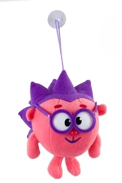
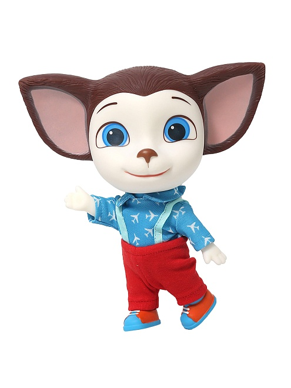
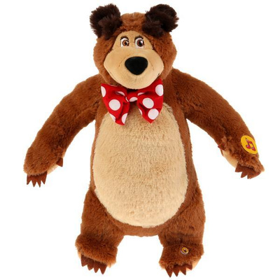
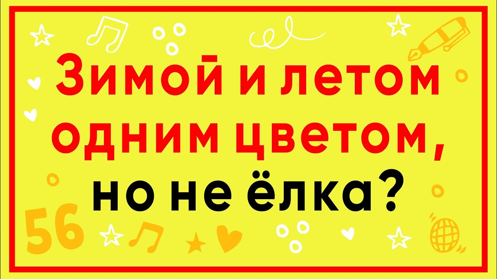
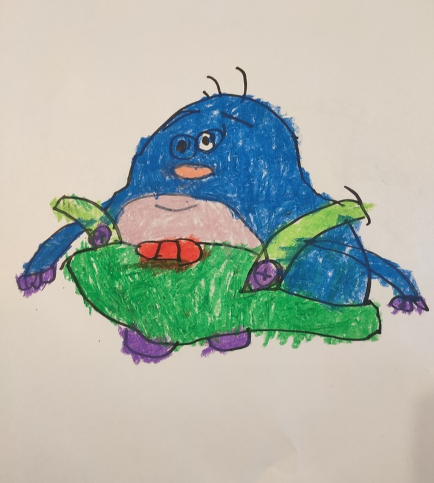
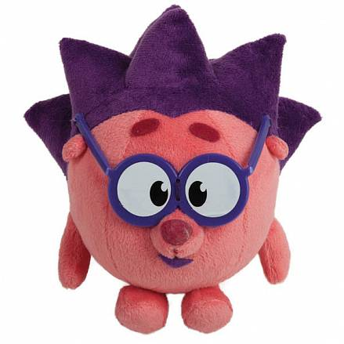

Самая популярная школа астрономии для детей и взрослых
Онлайн-курсы и уроки по астрономии. Простыми словами о сложном мире. О нашей Земле, планетах,
звездах, галактиках, черных дырах, полетах в космос и многом другом
260 тыс.
подпищиков
244тыс.
подпищиков
САМЫЕ ВЫГОДНЫЕ ЦЕНЫ НА КУРСЫ ВЕСЬ ДЕКАБРЬ
Успейте записаться на курс до новогоднего повышения цен
Наши Курсы
Путешествия к планетам
Для детей и взрослых
Подробнее о курсе
Владимир Сурдин
Преподаватель
телескоп
Для детей и взрослых
Подробнее о курсе
Владимир Сурдин
Преподаватель

Путешествия к ежику
Для детей и взрослых
Подробнее о курсе
Владимир Сурдин
Преподаватель
скоро
Для детей и взрослых
Подробнее о курсе
Владимир Сурдин
Преподаватель
посморите страные и тапорные картинки

история о барбоскинах
26 ₽
Подробнее

домашный медвель
1000000000 ₽
Подробнее

зимой и летом одним цветом
0,00000000000000000000000000001 ₽
Подробнее

мы в будущем (точно не обман )
300 ₽
Подробнее

ежик
Ёжик — один из главных персонажей мультсериала «Смешарики». Он представляет собой круглого ёжика с фиолетовыми иголками, очками и добрым, немного застенчивым характером. Ёжик — интеллектуал, любит читать книги, увлекается наукой и технологиями. Он часто выступает в роли голоса разума среди друзей, старается решать проблемы логически и спокойно.
Несмотря на свою любовь к порядку и знаниям, Ёжик иногда бывает нерешительным и скромным, особенно в общении с Совуньей, к которой он испытывает симпатию. Его друзья ценят его за ум, доброту и готовность помочь. Ёжик часто участвует в приключениях смешариков, предлагая разумные решения и поддерживая своих друзей.
Его внешний вид и характер делают его одним из самых узнаваемых и любимых персонажей мультсериала.
Кар-Карыч — один из персонажей популярного мультсериала «Смешарики». Он представляет собой ворона, который часто ведёт себя как мудрый, но немного эксцентричный старик. Кар-Карыч любит рассказывать истории из своей жизни, часто приукрашивая их, и обладает ярким, запоминающимся характером. Он часто выступает в роли наставника для других смешариков, но иногда сам попадает в забавные ситуации.
Совунья — это одна из главных героинь мультфильма. Она представляет собой смесь совы и человека. Совунья — мудрая, заботливая и немного строгая, но добрая персона. Она работает врачом в мире Смешариков и часто даёт полезные советы своим друзьям. Её характерная черта — это её очки и манера говорить с лёгким акцентом, что добавляет ей обаяния.


 Kaбинет ученикка
Kaбинет ученикка